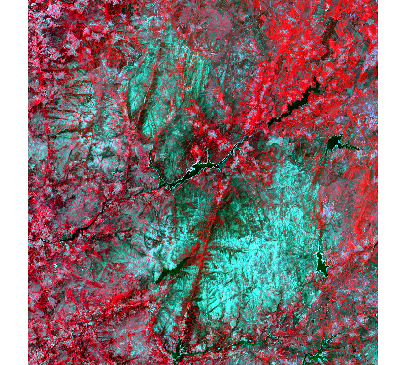

P10 Solutions to exercises with raster data (advanced)
João Gonçalves
5 December 2017
Below are the solutions to these exercises on raster data (advanced).
####################
# #
# Exercise 1 #
# #
####################
## Create a folder named data-raw inside the working directory to place downloaded data
if(!dir.exists("./data-raw")) dir.create("./data-raw")
## If you run into download problems try changing: method = "wget"
download.file("https://raw.githubusercontent.com/joaofgoncalves/R_exercises_raster_tutorial/master/data/LT8_PNPG_MultiBand.zip", "./data-raw/LT8_PNPG_MultiBand.zip", method = "auto")
# Unzip the data to the target folder
unzip("./data-raw/LT8_PNPG_MultiBand.zip", exdir = "./data-raw")library(raster)
# Load data into R
rst <- brick("./data-raw/LC82040312015193LGN00_sr_b_1_7.tif")
ncell(rst)## [1] 2286600nlayers(rst)## [1] 7####################
# #
# Exercise 2 #
# #
####################
plotRGB(rst, 5, 1, 3, stretch = "lin")

####################
# #
# Exercise 3 #
# #
####################
# Get a data.frame with all data
rstDF <- values(rst)
# Index for non-NA values
idx <- complete.cases(rstDF)
# Perform k-means
km <- kmeans(rstDF[idx, ], centers = 5, iter.max = 100)
# Create a temporary integer vector for holding cluster numbers
kmClust <- vector(mode = "integer", length = ncell(rst))
# Generate the temporary clustering vector for K-means (keeps track of NA's)
kmClust[!idx] <- NA
kmClust[idx] <- km$cluster
# Set cluster values
kmRst <- rst[[1]]
values(kmRst) <- kmClust####################
# #
# Exercise 4 #
# #
####################
library(cluster)
# Perform CLARA's clustering (using euclidean distance)
cla <- clara(rstDF[idx, ], k = 5, metric = "euclidean")
# Create a temporary integer vector for holding cluster numbers
claClust <- vector(mode = "integer", length = ncell(rst))
# Generate the temporary clustering vector for K-means (keeps track of NA's)
claClust[!idx] <- NA
claClust[idx] <- km$cluster
# Set cluster values
claRst <- rst[[1]]
values(claRst) <- claClust####################
# #
# Exercise 5 #
# #
####################
library(RStoolbox)
# For Landsat8OLI use only bands: 2, 3, 4, 5, 6, and, 7
tctL8 <- tasseledCap(rst[[2:7]], sat="Landsat8OLI")####################
# #
# Exercise 6 #
# #
####################
library(RStoolbox)
pcaL8 <- rasterPCA(rst, spca = TRUE)
print(pcaL8)## $call
## rasterPCA(img = rst, spca = TRUE)
##
## $model
## Call:
## princomp(cor = spca, covmat = covMat[[1]])
##
## Standard deviations:
## Comp.1 Comp.2 Comp.3 Comp.4 Comp.5 Comp.6
## 2.38453147 1.04487144 0.39409524 0.20287564 0.11697008 0.09781039
## Comp.7
## 0.05034737
##
## 7 variables and 2286600 observations.
##
## $map
## class : RasterBrick
## dimensions : 1545, 1480, 2286600, 7 (nrow, ncol, ncell, nlayers)
## resolution : 30, 30 (x, y)
## extent : 549615, 594015, 4613355, 4659705 (xmin, xmax, ymin, ymax)
## coord. ref. : +proj=utm +zone=29 +datum=WGS84 +units=m +no_defs +ellps=WGS84 +towgs84=0,0,0
## data source : in memory
## names : PC1, PC2, PC3, PC4, PC5, PC6, PC7
## min values : -5.479014, -5.121455, -3.504654, -5.417790, -2.359389, -1.549161, -1.784862
## max values : 32.568129, 4.537125, 14.160962, 4.581198, 2.599548, 1.610236, 1.010612
##
##
## attr(,"class")
## [1] "rasterPCA" "RStoolbox"# Explained in the 3 comps = 99.04%
summary(pcaL8$model)## Importance of components:
## Comp.1 Comp.2 Comp.3 Comp.4
## Standard deviation 2.3845315 1.0448714 0.39409524 0.20287564
## Proportion of Variance 0.8122843 0.1559652 0.02218729 0.00587979
## Cumulative Proportion 0.8122843 0.9682495 0.99043682 0.99631661
## Comp.5 Comp.6 Comp.7
## Standard deviation 0.116970079 0.097810387 0.0503473733
## Proportion of Variance 0.001954571 0.001366696 0.0003621226
## Cumulative Proportion 0.998271181 0.999637877 1.0000000000####################
# #
# Exercise 7 #
# #
####################
## Create a folder named data-raw inside the working directory to place downloaded data
if(!dir.exists("./data-raw")) dir.create("./data-raw")
## If you run into download problems try changing: method = "wget"
download.file("https://raw.githubusercontent.com/joaofgoncalves/R_exercises_raster_tutorial/master/data/CLIM_DATA_PT.zip", "./data-raw/CLIM_DATA_PT.zip", method = "auto")
## Uncompress the zip file
unzip("./data-raw/CLIM_DATA_PT.zip", exdir = "./data-raw")library(gstat)## Warning: package 'gstat' was built under R version 3.4.2climDataPT <- read.csv("./data-raw/ClimData/clim_data_pt.csv")
proj4Str <- "+proj=longlat +ellps=WGS84 +datum=WGS84 +no_defs"
statPoints <- SpatialPointsDataFrame(coords = climDataPT[,c("Lon","Lat")],
data = climDataPT,
proj4string = CRS(proj4Str))
## ORDINARY KRIGING --------------------------------
set.seed(12345)
formMod <- AvgTemp ~ 1
modSph <- vgm(model = "Sph", psill = 3, range = 150, nugget = 0.5)
variog <- variogram(formMod, statPoints)
# Variogram fitting by Ordinary Least Squares (OLS)
variogFitOLS_Sph<-fit.variogram(variog, model = modSph, fit.method = 6)
# Kriging CV
OK.sph.cv <- krige.cv(formMod, statPoints, model=variogFitOLS_Sph, nfold=5)
# RMSE Spherical model
sqrt(mean((OK.sph.cv$residual)^2))## [1] 1.337588####################
# #
# Exercise 8 #
# #
####################
library(gstat)
## ORDINARY KRIGING --------------------------------
set.seed(12345)
formMod <- AvgTemp ~ 1
modExp <- vgm(model = "Exp", psill = 3, range = 150, nugget = 0.5)
variog <- variogram(formMod, statPoints)
# Variogram fitting by Ordinary Least Squares (OLS)
variogFitOLS_Exp<-fit.variogram(variog, model = modExp, fit.method = 6)
# Kriging CV
OK.Exp.cv <- krige.cv(formMod, statPoints, model=variogFitOLS_Exp, nfold=5)
# RMSE Exponential model
sqrt(mean((OK.Exp.cv$residual)^2))## [1] 1.223307The Exponential model provided better results with lower RMSE.
####################
# #
# Exercise 9 #
# #
####################
library(Cubist)## Warning: package 'Cubist' was built under R version 3.4.3## Loading required package: latticeset.seed(12345)
idx <- sample(1:nrow(climDataPT), size = 15)
cub <- cubist(x = climDataPT[-idx, c("Lat","Elev","distCoast")],
y = climDataPT[-idx, "AvgTemp"])
obs <- climDataPT[idx, "AvgTemp"]
pred <- predict(cub, newdata = climDataPT[idx, ], type="response")
# RMSE Exponential model
sqrt(mean((obs - pred)^2))## [1] 0.624294####################
# #
# Exercise 10 #
# #
####################
library(gstat)
resid.cub <- climDataPT[-idx, "AvgTemp"] - predict(cub, newdata = climDataPT[-idx, ], type="response")
idxbool <- 1:nrow(climDataPT) %in% idx
statPointsTrain <- statPoints[!idxbool, ]
statPointsTrain@data <- cbind(statPointsTrain@data, residCubist = resid.cub)
statPointsTest <- statPoints[idxbool, ]
formMod <- residCubist ~ 1
modExp <- vgm(model = "Exp", psill = 0.35, range = 5, nugget = 0.01)
variog <- variogram(formMod, statPointsTrain)
# Variogram fitting by Ordinary Least Squares (OLS)
variogFitOLS_Exp<-fit.variogram(variog, model = modExp, fit.method = 6)## Warning in fit.variogram(variog, model = modExp, fit.method = 6): No
## convergence after 200 iterations: try different initial values?#plot(variog, variogFitOLS_Exp, main="OLS Model")
# kriging predictions
OK <- krige(formula = residCubist ~ 1 ,
locations = statPointsTrain,
model = variogFitOLS_Exp,
newdata = statPointsTest,
debug.level = 0)
pred.resid <- OK@data$var1.pred
pred.cubist <- predict(cub, newdata = climDataPT[idx, ], type="response")
pred.RK <- pred.cubist + pred.resid
obs <- climDataPT[idx, "AvgTemp"]
sqrt(mean((pred.RK - obs)^2))## [1] 0.6110832Yes, regression-kriging does improve slightly the average temperature predictions for the test set.